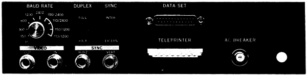

| Chapter 2 | Contents |
Before operating the VT05, the user should be thoroughly familiar with the information provided in this manual as well as the various controls of the VT05. In addition, the user should always be aware that the VT05 is a television-like device with a cathode ray tube. Use care and good judgment in handling the equipment.
WARNING
The device should never be subjected to severe blows on any surface, and the cover should not be removed nor maintenance performed except by qualified maintenance personnel.
VT05 controls and indicators and their respective functions are listed in Table 3-1.
| Control or Indicator | Functions |
|---|---|
| Power ON/OFF Switch | This switch is located on the right front of the VT05. When the ON/OFF switch is turned ON, power is applied to the complete system and the VT05 display refresh memory is cleared. After approximately one minute has elapsed, the cursor should appear in the upper left-hand corner (HOME position) of the screen. |
| LOCAL/REMOTE Switch | This switch is located on the right front of the VT05. In LOCAL mode, the terminal is off-line and data transmitted from the keyboard is applied back to the VT05 receiver logic by connecting the transmitter output to the VT05 receiver input. In REMOTE mode, keyboard data is transmitted from the VT05 to the processor while the VT05 is simultaneously receiving data from the processor for entry into the buffer memory (full-duplex operation). When operating in HALF-DUPLEX mode, if inputs are received from both the VT05 transmitter and the computer simultaneously, the two inputs will be mixed or garbled. |
| FULL/HALF-DUPLEX Switch | This switch is located on the rear of the VT05. In the FULL-DUPLEX position, while keyboard data is transmitted to the computer, the display can concurrently receive data from the computer. In the HALF-DUPLEX position, data is transmitted to the VT05 receiver logic as well as to the computer. In both cases, received data will be recognized and processed by the VT05 (see Figure 3-1). NOTE The terminal display is a raster television device. The CONTRAST, BRIGHTNESS, VERTICAL and HORIZONTAL controls are adjusted in the same way as those of a commercial television receiver. |
| CONTRAST Control | The CONTRAST control is located on the right-hand side of the VT05 and is used to adjust for picture contrast (clarity). |
| BRIGHTNESS Control | The BRIGHTNESS control is located on the right-hand side of the VT05 and is used to adjust for CRT display brightness or intensity. NOTE To correctly adjust the VT05 character presentation, turn the CONTRAST control counterclockwise to minimum, then adjust the BRIGHTNESS control decreasing the intensity until the raster brightness is barely intensified (just above the CRT cutoff point). As a final step, adjust the CONTRAST control to the desired level, according to ambient lighting conditions. |
| VERTICAL Sync Control | The VERTICAL sync control is located on the right-hand side of the VT05 and is used to properly synchronize the raster in the vertical direction. |
| HORIZONTAL Sync Control | The HORIZONTAL sync control is located on the right-hand side of the VT05 and is used to adjust the picture for proper synchronization in the horizontal direction. |
| BAUD RATE SELECTION Switch | This switch is located on the rear of the VT05 and has ten positions (see Figure 1-3). The various switch positions and respective transmit and receive rates are provided in Table 3-2. (NOTE: See filler character requirements, Paragraph 2.7.) |
|  |
At the 110-baud rate, an 11-unit code consisting of one start bit, seven data bits, one parity bit, and two stop bits is used. A 10-unit code is used for all other baud rates (only one stop bit is used). The parity bit can optionally be set to a "mark" (no parity) or to even parity.
| Switch Positions | Transmit Rate | Receive Rate | ||
|---|---|---|---|---|
| *VT05B only; not implemented on VT05A. | ||||
| Fully Counterclockwise | 110 | 110 | ||
| | | 150 | 150 | ||
| | | 300 | 300 | ||
| V | 600 | * | 600 | * |
| through | 1200 | * | 1200 | * |
| 2400 | * | 2400 | * | |
| | | 150 | * | 2400 | * |
| | | 110 | * | 2400 | * |
| V | 150 | * | 1200 | * |
| Fully Clockwise | 110 | * | 1200 | * |
Before proceeding with the turn-on procedure, the operator should reread Paragraph 3.1 pertaining to system controls and indicators.
CAUTION
Approximately one minute after the power ON/OFF switch is turned on the screen should display the cursor. Turn power OFF if the cursor does not appear within this time period.
The following procedure is provided for initial turn-on when operating in LOCAL mode. Perform step 3 of this procedure only during initialisation or initial step, or in instances when the VT05 must be moved to a different location and a different wall receptacle must be used.
The following procedure is provided for initial turn-on when operating in REMOTE mode. Perform step 4 of this procedure only during installation or initial setup, or if the VT05 is moved to a different location and a different wall receptacle must be used.
For normal operation, the LOCAL/REMOTE switch is set to the REMOTE position. The LOCAL mode is provided to enable the VT05 to be operated off-line for training, maintenance, troubleshooting, and alignment purposes.
In LOCAL mode, the terminal is off-line, and the transmitter as well as the receiver is disconnected from the external output and input lines. Transmitted data from the keyboard is fed back to the terminal receiver by connecting the terminal (transmitter) output to the terminal (receiver) input (see Figure 3-2). This is accomplished by setting the LOCAL/REMOTE switch to the LOCAL position.
For normal operation, set the LOCAL/REMOTE switch in the REMOTE (on-line) position. In REMOTE mode, with the DUPLEX switch set to FULL, the terminal transmits data from the terminal keyboard directly to the processor while simultaneously receiving data to be entered into the terminal buffer memory. A split-speed capability is provided in the REMOTE mode, because the timing circuits for the input and output data are independent.
 |
The FULL/HALF DUPLEX switch is located on the VT05 rear panel. When the switch is set to the FULL-DUPLEX position, data transmitted from the keyboard will go to the computer only; the data then may be repeated back to the display from the computer. When the switch is set to the HALF-DUPLEX position, data is transmitted to the display at the same time it is transmitted to the computer. The VT05 control logic then receives the information transmitted from the keyboard as well as from the computer (see Figure 3-2). The operator will have this in the FULL-DUPLEX position for most applications.
The basic function of the keyboard is to provide a convenient, on-line means of transmitting U.S. ASCII characters to the processor to be processed and displayed on the VT05 CRT display. The VT05 keyboard relative key positions and key markings are shown in Figure 2-1. The VT05 transmit character sets are provided in Tables 1-1 and 1-2.
When the control (CTRL) key is pressed in conjunction with another key, bits 6 and 7 of that particular key code are cleared to zero. The BELL and direct cursor addressing (CAD) functions are derived through the use of the CTRL key, and are two functions that are especially useful. The BELL code or function is generated by pressing the CTRL and "G" keys simultaneously. BELL causes an aural tone or "beep" to be generated by the VT05 speaker each time the BELL code is received. This function is especially useful as an aural indicator to gain the operator's attention, but should be used several times in succession to distinguish between BELL and the end-of-line tone aural indicator.
The CAD function is generated by pressing the CTRL and "N" keys simultaneously. CAD operations and applications are described in detail in Paragraph 3.9.
When the SHIFT key is pressed in conjunction with one of the VT05 displayable character keys, bit 6 is complemented if bit 7 is a logical 1 and bit 5 is complemented if bit 7 is a logical 0, and the upper case equivalent of that particular character will be generated; e.g., "!" rather than "1", "A" rather than "a", etc. (see Table 1-1 and Figure 2-1). This rule applies to all characters transmitted from the VT05 except control characters. All VT05 control characters are "SHIFT inhibited".
The (erase) LOCK key serves as an enabling key for the EOL and EOS keys (or functions) and must be pressed simulataneously with the EOL and EOS keys. If the LOCK key is not pressed in conjunction with EOL and EOS, those functions will be inhibited. This arrangement ensures that text on the display screen will not be accidently erased if the operator presses the EOL or EOS key unintentionally.
When the SHIFT/LOCK key is used in SHIFT operation as described in Paragraph 3.4.2, the SHIFT function will be permanently enabled until the SHIFT/LOCK key is released.
The ALT key is provided as an extra key to allow the operator alternatives, especially in programming applications. The ALT key is more commonly used to allow the programmer an alternate "escape" character code in instances where he does not wish to use carriage return or line feed; ALT may also be used for other functions, according to the particular programming requirements. ALT code is ignored when it is received by the VT05 and has no effect on the display.
The VT05 control functions are used for format control of the text, display erase applications, and cursor movement.
![[left]](arrowleft.png) )
)Cursor left (0108) causes the cursor to move left (or backspace) one character space each time the cursor left code is received until the cursor reaches the left-hand margin (first character position). Receipt of the cursor left code after the cursor reaches the left-hand margin has no effect, and the cursor will remain in character position 1 of that particular line.
![[right]](arrowright.png) )
)Cursor right (0308) causes the cursor to move right one character space each time the cursor right code is received until the cursor reached the seventy-second character position of that line; receipt of the code at this point has no effect and the cursor remains in character position 72 until another control character code such as carriage return, line feed, etc., is received.
![[down]](arrowdown.png) )
)Cursor down (0138) causes the cursor to move down one line until the cursor reaches the bottom line. Once the cursor is in the bottom line, receipt of the cursor down code has no effect. (See Paragraph 2.7.)
![[up]](arrowup.png) )
)Cursor up (0328) causes the cursor to move up one line until the cursor reaches the top line. Once the cursor has reached the top line, receipt of the cursor up code has no effect. (See Paragraph 2.7.)
HOME (0358) causes the cursor to move to the first character position of the first line in the upper left-hand corner of the screen. (See Paragraph 2.7.)
TAB (0118) causes the cursor to move right to the next TAB stop each time the TAB code is received. TAB stops are preset eight character spaces apart. TAB stop locations are at character positions 1, 9, 17, 25, 33, 41, 49, 57 and 65. Once the cursor reaches character position 65, all TAB commands received thereafter will cause the cursor to move only one character position. Once the cursor reaches character position 72, receipt of the TAB code has no effect.
When the EOL key is pressed, all text from the cursor position (including data in the cursor position) to the end of that particular line will be erased, and the cursor will remain in the current location. For example, if the cursor is located in character position 30 of line 10 and the EOL key is pressed, all text from character position 30 (including character position 30) to character position 72 of line 10 will be erased. Text or characters contained in all other lines will not be affected.
NOTE
The (erase) LOCK key must be pressed at the same time as the EOL and/or EOS key to enable the EOL and EOS codes to be generated. If the (erase) LOCK key is not pressed in conjunction with EOL and EOS, those functions will be inhibited.
When the EOS key is pressed, all text from the cursor position (including data in the cursor position) to the end of the screen will be erased, and the cursor will remain in the current location. For example, if the cursor is positioned under character 7 of line 15 and the EOS key is pressed, all text or data from the cursor position to the end of line 15 and all text or data contained in lines 16-20 will be erased. (See Paragraph 2.7.)
In addition to the control character functions, the VT05 also has three automatic functions: scroll, end-of-line tone, and cursor advance.
When the cursor is located in the last character line (line 20) and a linefeed code is received the following will occur: all displayed data will move up one line and any data contained in the top line will disappear or "scroll" off the screen, and data contained in this line will be erased from the display refresh memory.
The term "automatic scrolling" should not be construed to mean that text contained on the screen will scroll or move up one line once a character is generated in character position 72 of a given line. Automatic scrolling will not occur if a linefeed is generated with the cursor located in any line other than line 20.
Automatic scrolling is useful for programming applications, especially when a large amount of data is transmitted from the computer to the VT05 to be received and displayed.
When a displayable character is received, the character is displayed and the cursor automatically moves right to the next character location until the cursor reaches character position 72; at this point, received characters will still be displayed by directly replacing the character in position 72, but it will have no effect on the cursor.
A speaker in the VT05 generates an aural tone or "beep" on reaching character position 65. This function serves as an end-of-line indication or warning (8 spaces before the end of line).
NOTE
Automatic carriage return or line feed is purposely not used in the VT05; these functions must be included as part of the program. Should automatic carriage return or line feed be required for special applications, contact the DEC Field Service Department.
There are four methods that are used for display erase: character deletion, direct character replacement, erase-to-end-of-line, and erase-to-end-of-screen.
The first method is erasure of individual characters by using SPACE (0408). When the cursor is placed under an existing character and the SPACE character code is received, the character will be deleted.
The second method is replacement of an existing or displayed character with a transmitted character. For example, if the cursor is positioned under an existing character such as "A" and the character "E" is received, "A" will be replaced by "E". Thus, this method uses a one-for-one character replacement as opposed to the first method, which deletes the character leaving the character position blank.
The EOL and EOS functions are described in detail in Paragraphs 3.5.7 and 3.5.8.
Through the use of CAD (0168), the cursor can be directed to any one of the 1440 character locations on the CRT screen using three instructions. The CAD function is used to allow updating of displayed data without retransmitting the complete page. For example, if the cursor is located in character location 55 of line 18 and the operator wishes to update information beginning at character location 35 of line 9, transmission time would be greater if the operator used the cursor control characters, e.g., "cursor up" and "cursor left" to move to the new location. By using the CAD function and the codes shown in Table 3-3, the cursor can be quickly directed to any of the 1440 character locations on the screen. A reduction in generation time is especially noticeable when CAD-generated data is retrieved from memory.
CAD is received by the VT05, and the next two data words are interpreted as the Y- and X-address. The Y-data word presets the Y-address counter to the selected character line, and the X-data word presets the X-address counter to the selected character position in the selected line. Once the cursor is moved to the new location (or address), the cycle is complete and the next data word received will perform its normal function. (See Paragraph 2.7.)
| Line | Character Column | Character Used | Character Column | Character Used | Character Column | Character Used | |||
|---|---|---|---|---|---|---|---|---|---|
| 1 | 1 | space | 25 | 8 | 49 | P | |||
| 2 | 2 | ! | 26 | 9 | 50 | Q | |||
| 3 | 3 | " | 27 | : | 51 | R | |||
| 4 | 4 | # | 28 | ; | 52 | S | |||
| 5 | 5 | $ | 29 | < | 53 | T | |||
| 6 | 6 | % | 30 | = | 54 | U | |||
| 7 | 7 | & | 31 | > | 55 | V | |||
| 8 | 8 | ' | 32 | ? | 56 | W | |||
| 9 | 9 | ( | 33 | @ | 57 | X | |||
| 10 | 10 | ) | 34 | A | 58 | Y | |||
| 11 | 11 | * | 35 | B | 59 | Z | |||
| 12 | 12 | + | 36 | C | 60 | [ | |||
| 13 | 13 | , | 37 | D | 61 | \ | |||
| 14 | 14 | - | 38 | E | 62 | ] | |||
| 15 | 15 | . | 39 | F | 63 | ^ | |||
| 16 | 16 | / | 40 | G | 64 | _ | |||
| 17 | 17 | 0 | 41 | H | 65 | ` | |||
| 18 | 18 | 1 | 42 | I | 66 | a | |||
| 19 | 19 | 2 | 43 | J | 67 | b | |||
| 20 | 20 | 3 | 44 | K | 68 | c | |||
| 21 | 4 | 45 | L | 69 | d | ||||
| 22 | 5 | 46 | M | 70 | e | ||||
| 23 | 6 | 47 | N | 71 | f | ||||
| 24 | 7 | 48 | O | 72 | g | ||||
NOTE
The codes for the numbers, symbols, and characters listed in Table 3-3 are the only (legal) codes that can be used for CAD operation. In the Y-axis, any codes that are less than 040(8) or greater than 063(8) are illegal. In the X-axis, any codes that are less than 040(8) or greater than 147(8) are illegal. All illegal codes are ignored by the VT05 when the CAD function is used.
The three commands required to move the cursor from character location 55 of line 8 to character location 35 of line 9 are as follows:
| Mnemonic | Literal | Octal Code | Function | |||
|---|---|---|---|---|---|---|
| CAD | CTRL "N" | 016(8) | Transmits CAD code. | |||
| YAD 9 | "(" | 050(8) | Defines the Y-address or location (line 9). | |||
| XAD 35 | "B" | 102(8) | Defines the X-address or desired character location (location 35). | |||
The character assignments and corresponding line and character locations are listed in Table 3-3.
Periodic preventive maintenance should be performed, and care and good judgment should be exercised to ensure proper equipment operation.
The exterior surfaces may be cleaned using a damp cloth and a mild detergent. Only a very soft cloth should be used to avoid scratching the protective screen used on the face of the CRT.
The VT05 also contains small air exhaust vents and an internal fan is used to provide constantly circulating air for cooling. These vents must remain clean and unobstructed to allow adequate cooling. Should the vents become obstructed, premature component failure may occur due to an increase in the internal temperature.
If the VT05 is moved from the location at which it is originally installed to a new location, the wall receptacle to be used at the new location should be checked to ensure the line voltage and frequency agree with the requirements specified on the rear panel of the VT05.
If a malfunction occurs, the user should contact the local DEC Field Service Office. The VT05 cover should not be removed nor maintenance performed except by qualified maintenance personnel.